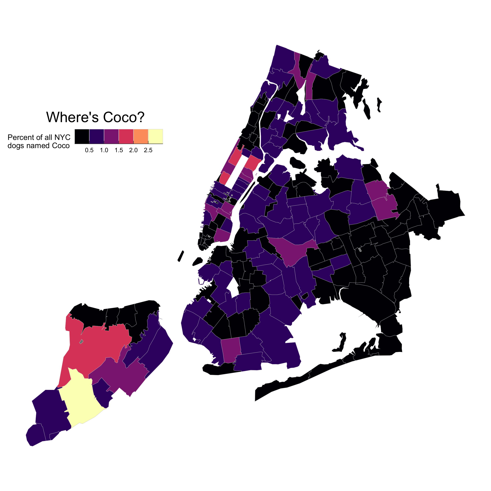

Installation
nycdogs is a data package, bundling several datasets into a convenient format. The relatively large size of the data in the package means it is not suitable for hosting on CRAN, the core R package repository. Install the package from GitHub with:
# install.packages("pak")
pak::pak("kjhealy/nycdogs")The nycdogs package contains two datasets, nyc_license and nyc_bites. They contain, respectively, data on all licensed dogs in New York city (current), and data on reported dog bites in New York city (older data). It also re-exports objects fron nyczips to make it easier to draw maps of the data.
Loading the data
The package works best with the tidyverse libraries and the simple features package for mapping.
library(tidyverse)
#> ── Attaching core tidyverse packages ──────────────────────── tidyverse 2.0.0 ──
#> ✔ dplyr 1.1.4 ✔ readr 2.1.5
#> ✔ forcats 1.0.1 ✔ stringr 1.6.0
#> ✔ ggplot2 4.0.0 ✔ tibble 3.3.0
#> ✔ lubridate 1.9.4 ✔ tidyr 1.3.1
#> ✔ purrr 1.2.0
#> ── Conflicts ────────────────────────────────────────── tidyverse_conflicts() ──
#> ✖ dplyr::filter() masks stats::filter()
#> ✖ dplyr::lag() masks stats::lag()
#> ℹ Use the conflicted package (<http://conflicted.r-lib.org/>) to force all conflicts to become errors
library(sf)
#> Linking to GEOS 3.13.0, GDAL 3.8.5, PROJ 9.5.1; sf_use_s2() is TRUELoad the data:
To look at the tibble that contains the licensing data, do this:
nyc_license
#> # A tibble: 722,864 × 12
#> animal_name animal_gender animal_birth_year breed_name breed_rc zip_code
#> <chr> <chr> <int> <chr> <chr> <chr>
#> 1 Paige F 2014 American Pit B… Pit Bul… 10035
#> 2 Yogi M 2010 Boxer Boxer 10465
#> 3 Ali M 2014 Basenji Basenji 10013
#> 4 Queen F 2013 Akita Crossbre… Akita C… 10013
#> 5 Lola F 2009 Maltese Maltese 10028
#> 6 Ian M 2006 Unknown Unknown 10013
#> 7 Buddy M 2008 Unknown Unknown 10025
#> 8 Chewbacca F 2012 Labrador Retri… Labrado… 10013
#> 9 Heidi-bo F 2007 Dachshund Smoo… Dachshu… 11215
#> 10 Massimo M 2009 Bull Dog, Fren… Bull Do… 11201
#> # ℹ 722,854 more rows
#> # ℹ 6 more variables: zip <chr>, license_issued_date <date>,
#> # license_expired_date <date>, extract_year <int>, borough <chr>, city <chr>Example
Where dogs with a particular name live:
boro_names <- c("Manhattan", "Queens", "Brooklyn",
"Bronx", "Staten Island")
nyc_coco <- nyc_license |>
filter(borough %in% boro_names) |>
group_by(zip, animal_name) |>
tally() |>
ungroup() |>
complete(zip, animal_name,
fill = list(n = 0)) |>
filter(animal_name == "Coco") |>
mutate(freq = n / sum(n),
pct = round(freq*100, 2))
nyc_coco
#> # A tibble: 196 × 5
#> zip animal_name n freq pct
#> <chr> <chr> <int> <dbl> <dbl>
#> 1 10001 Coco 52 0.00960 0.96
#> 2 10002 Coco 61 0.0113 1.13
#> 3 10003 Coco 22 0.00406 0.41
#> 4 10004 Coco 2 0.000369 0.04
#> 5 10005 Coco 5 0.000923 0.09
#> 6 10006 Coco 0 0 0
#> 7 10007 Coco 25 0.00462 0.46
#> 8 10009 Coco 50 0.00923 0.92
#> 9 10010 Coco 57 0.0105 1.05
#> 10 10011 Coco 58 0.0107 1.07
#> # ℹ 186 more rows
## nyc_zip_sf is from the nyczips package, which is automatically loaded by nycdogs.
coco_map <- left_join(nyc_zip_sf, nyc_coco)
#> Joining with `by = join_by(zip)`
## Map theme
theme_nymap <- function(base_size=9, base_family="") {
require(grid)
theme_bw(base_size=base_size, base_family=base_family) %+replace%
theme(axis.line=element_blank(),
axis.text=element_blank(),
axis.ticks=element_blank(),
axis.title=element_blank(),
panel.background=element_blank(),
panel.border=element_blank(),
panel.grid=element_blank(),
panel.spacing=unit(0, "lines"),
plot.background=element_blank(),
legend.justification = c(0,0),
legend.position = "inside",
legend.position.inside = c(0, 0.7),
legend.direction = "horizontal"
)
}
coco_map |> ggplot(mapping = aes(fill = pct)) +
geom_sf(color = "gray80", linewidth = 0.1) +
scale_fill_binned(guide = "bins", type = "viridis", option = "A") +
labs(fill = "Percent of all NYC\ndogs named Coco") +
annotate(geom = "text", x = -74.16, y = 40.84,
label = "Where's Coco?", size = 6) +
theme_nymap()
#> Loading required package: grid